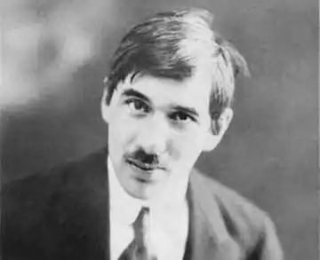

31 березня 1882 р. у Петербурзі народився Микола Васильович Корнєйчуков, російський письменник українського походження ("Мийдодир", "Тарганіще", "Айболить"), літературознавець і перекладач – Корній Іва́нович Чуковський. Він був позашлюбною дитиною полтавської селянки Катерини Осипівни Корнєйчукової та Еммануїла Соломоновича Левенсона.
Катруся – прислуга у сім'ї Левенсона, впала в око хазяйському сину. Коли ж гріх зіпсував фігуру дівчини, батьки винуватця відкупилися й виселили полтавку. Коханець зняв для молодої мами та народженої дівчинки помешкання, давав кошти на утримання. Катруся ж заробляла на життя прасуванням, не мала ніякої освіти, але була дуже гарненькою, як бариня, носила у вихідні дні капелюшок і рукавички з мереживом.
Коли вона знову стала "при надії", батьки одружили Еммануїла і стежили, щоб він не скакав у гречку. Маленькому Миколці мама при хрещенні дала своє прізвище, а хрещений батько Василь дав хлопцю ім'я по батькові. Оскільки батько вже не мав коштів для допомоги, мати з дітьми виїхала до Одеси. Там вона віддала шестирічного Миколу в дитячий садок мадам Бухтєєвої. Далі була гімназія, де Микола познайомився та потоваришував з Борисом Житковим, майбутнім дитячим письменником. Та царський указ "про кухарчиних дітей" змінив життя: у п'ятому класі хлопчика відрахували "за низьке походження". Пізніше він написав про це автобіографічну повість "Срібний герб". Працюючи на чищенні дахів від фарби, Микола опанував програму, склав іспити й отримав атестат зрілості. Крім того він самотужки вивчив англійську мову, придбавши за копійки самовчитель із вирваними сторінками та заучуючи нові слова під час роботи. Хлопець на даху крейдою писав слово, поки доповзав до останньої букви – запам'ятовував його та щовечора називав матері близько ста нових англійських слів. У книзі були відсутні сторінки, де пояснювалися правила вимови та читання, однак це не завадило хлопцю опанувати граматику та лексику незнайомої мови, яку він навіть жодного разу не чув. Ще в гімназії Корнєйчуков почав писати вірші та невеликі оповідання, але дуже соромився своїх творів, і лише в дев'ятнадцять років Володимир Жаботинський відкрив талант Корнєйчукова. Співробітник "Одеських новин" використовував псевдонім "Корній Чуковський", до якого згодом додалось фіктивне по батькові — "Іванович". Через два роки Жаботинський дав юнакові рекомендацію – і Корнія відправили до Англії, спеціальним кореспондентом, бо в редакції Корній був єдиним, хто володів англійською мовою. За два дні до від'їзду Корній Чуковський обвінчався з Марією Гольтфельд. У цьому шлюбі з'явилися діти — Микола, Лідія (обоє стали письменниками, Лідія — ще й правозахисником), Борис (загинув на фронті в перші місяці війни 1941 р.) і померла у 1931 р. від туберкульозу Марія (Мурочка), якій присвячена більшість дитячих віршів батька — носили після революції прізвище Чуковських та по батькові Корнійович/Корніївна. В Англії з'ясувалося, що Чуковський абсолютно не сприймає на слух англійську мову, не кажучи вже про вимову. Але майбутній письменник не знітився і почав активно переучуватися. Чуковський жив у Лондоні, надсилаючи до Росії свої статті та замітки, а також майже кожен день відвідував безкоштовний читальний зал бібліотеки Британського музею, де читав твори англійських письменників, істориків, філософів, публіцистів. Письменник раз і на все життя установив для себе правила, які наколи не порушував: – вставати о п'ятій годині ранку і одразу ж сідати за працю, не витрачати дарма жодної хвилини, – завжди відповідати на всі листи, – вести щоденник і виконувати всі обіцянки чи просто їх не давати. Напевно тому так багато встиг зробити. Після повернення до Росії Чуковський почав видавати сатиричний журнал "Сигнал", але допустив вільні вислови й образу імператорського прізвища, за що потрапив до в'язниці. Чекаючи рішення суду, він геть перелякав охорону тим, що читав уголос розповіді О. Генрі та реготав, немов божевільний. К. Чуковський переклав українських поетів (збірка "Молода Україна"), упорядкував кілька видань російських перекладів Тараса Шевченка, автор нарису "Шевченко" (1911). Чуковський – кращий критик "Срібного століття", але культурне середовище загинуло, бо воно не потрібне комісарам… і Чуковський поховав свій талант критика, про що шкодував все життя. За короткий час він створив найкращі казки – "Айболить", "Мийдодір", "Муха-Цокотуха", "Телефон". Але скільки було критики! "Муху-Цокотуху" оголосили гімном куркульського і міщанського побуту, що завдає радянським дітям непоправної шкоди. Письменник Казакевич сигналізував, що казка "Тарганіще" – це сатира на Йосипа Віссаріоновича Сталіна, хоч казка була написана, коли Чуковський ще не знав нічого про "батька народів". Далі почалася смуга особистих трагедій письменника. Туберкульоз звів у 1931 році в могилу одинадцятирічну доньку Марію, через сім років заарештували Матвія Бронштейна, чоловіка дочки Лідії. Тільки через два роки безперервної біганини інстанціями Чуковський зміг отримати інформацію про долю свого зятя, розстріляного у 1938 році. Чуковський займався перекладами книг Кіплінга, Марка Твена, Оскара Уайльда, видав книгу про теорію художнього перекладу. У 1962 році він став почесним доктором літератури Оксфордського університету у Великобританії. На його дачі в Передєлкіно Корній Іванович організував за власний кошт дитячу бібліотеку, читальню та дім дитячої книги. Корній Чуковський захворів вірусним гепатитом і у віці 87 років. помер 28 жовтня 1969 року. Прах Корнія Івановича Чуковського спочив на невеликому кладовищі селища Передєлкіно. Ще до своєї смерті письменник склав список людей, яких не бажав "бачити" на своєму похороні. Джерело: UAmodna.com